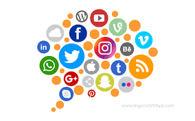

¿Que son las redes sociales?
Las redes sociales, en el mundo virtual, son sitios y aplicaciones que operan en niveles diversos como el profesional, de relación, entre otros pero siempre permitiendo el intercambio de información entre personas y/o empresas.Cuando hablamos de red social, lo que viene a la mente en primer lugar son sitios como Facebook, Twitter y LinkedIn o aplicaciones como TikTok e Instagram, típicos de la actualidad. Pero la idea, sin embargo, es mucho más antigua: en la sociología, por ejemplo, el concepto de red social se utiliza para analizar interacciones entre individuos, grupos, organizaciones o hasta sociedades enteras desde el final del siglo XIX.En Internet, las redes sociales han suscitado discusiones como la de falta de privacidad, pero también han servido como medio de convocatoria para manifestaciones públicas en protestas. Estas plataformas crearon, también, una nueva forma de relación entre empresas y clientes, abriendo caminos tanto para la interacción, como para el anuncio de productos o servicios.